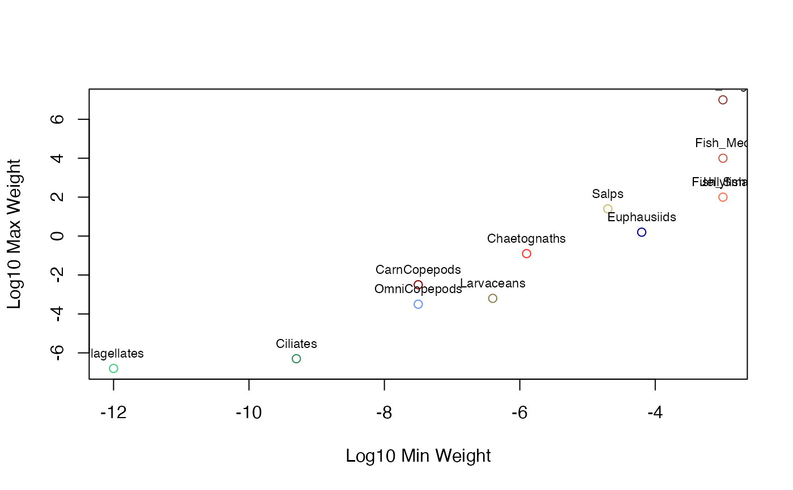

A dataset containing the biological parameters for different functional groups used in the ZooMSS size-structured marine ecosystem model. These represent various taxa from flagellates to large fish, each defined by their feeding behavior, size ranges, and physiological parameters.
GroupInputsA data frame with 12 rows (functional groups) and 19 columns:
Character. Name of the functional group/taxa
Character. Broad category (Zooplankton or Fish)
Character. Feeding strategy (Heterotroph, FilterFeeder, Omnivore, Carnivore)
Numeric. Initial proportion of total biomass
Numeric. Log10 minimum body weight (g) for the group
Numeric. Log10 maximum body weight (g) for the group
Numeric. Log10 maturation body weight (g)
Numeric. Search coefficient for predation interactions
Numeric. Search exponent for predation scaling
Numeric. Predator-prey mass ratio scaling parameter
Numeric. Predator-prey mass ratio (for fish groups)
Numeric. Feeding kernel width parameter
Numeric. Gross growth efficiency scaling
Numeric. Carbon content proportion
Numeric. Reproduction parameter
Numeric. Fishing mortality rate
Numeric. Log10 minimum weight for fishing mortality
Numeric. Log10 maximum weight for fishing mortality
Character. Color code for plotting the functional group
Marine ecological literature and ZooMSS model development
ZooMSS Functional Groups Data
The GroupInputs dataset defines 12 functional groups spanning from small microzooplankton (flagellates, ciliates) through various mesozooplankton groups (copepods, euphausiids, chaetognaths) to gelatinous zooplankton (salps, jellyfish) and three fish size classes. Each group is characterized by:
Size ranges: W0 to Wmax define the body size spectrum
Feeding behavior: Different strategies for resource acquisition
Interaction parameters: Search rates and predator-prey relationships
Physiological rates: Growth efficiency and carbon content
These parameters are based on marine ecological literature and represent typical values for temperate marine ecosystems.
data(GroupInputs)
head(GroupInputs)
#> # A tibble: 6 × 19
#> Species Type FeedType Prop W0 Wmax Wmat SearchCoef SearchExp PPMRscale
#> <chr> <chr> <chr> <dbl> <dbl> <dbl> <dbl> <dbl> <dbl> <dbl>
#> 1 Flagell… Zoop… Heterot… 0.1 -12 -6.8 -8.8 640 0.8 1.5
#> 2 Ciliates Zoop… Heterot… 0.1 -9.3 -6.3 -8.3 640 0.8 0.04
#> 3 Larvace… Zoop… FilterF… 0.1 -6.4 -3.2 -5.2 640 0.8 -3
#> 4 OmniCop… Zoop… Omnivore 0.04 -7.5 -3.5 -5.5 640 0.8 -0.5
#> 5 CarnCop… Zoop… Carnivo… 0.06 -7.5 -2.5 -4.5 640 0.8 1.5
#> 6 Euphaus… Zoop… Omnivore 0.1 -4.2 0.2 -1.8 640 0.8 -2
#> # ℹ 9 more variables: PPMR <dbl>, FeedWidth <dbl>, GrossGEscale <dbl>,
#> # Carbon <dbl>, Repro <dbl>, Fmort <dbl>, Fmort_W0 <dbl>, Fmort_Wmax <dbl>,
#> # PlotColour <chr>
# View size ranges across groups
plot(GroupInputs$W0, GroupInputs$Wmax,
col = GroupInputs$PlotColour,
xlab = "Log10 Min Weight", ylab = "Log10 Max Weight")
text(GroupInputs$W0, GroupInputs$Wmax, GroupInputs$Species, pos = 3, cex = 0.7)
